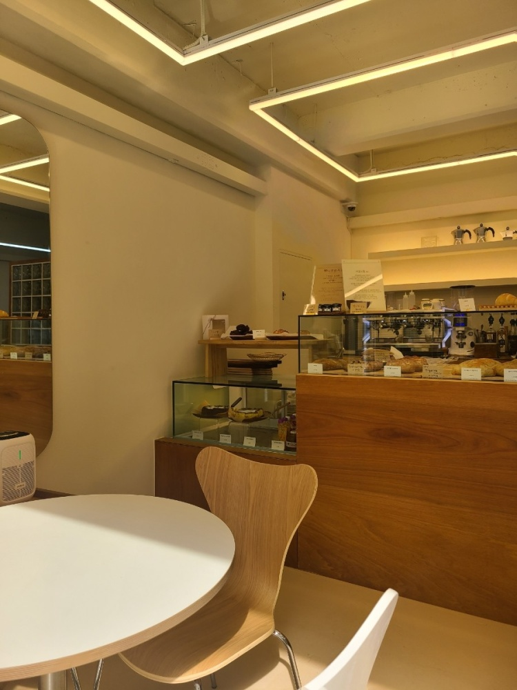

카페 난초는...
사장님이 직접 원두를 로스팅하는 우리 동네 로스터리 카페입니다.
2021년부터 시작해 역사가 깊진 않지만 커피에 진심인 사장님과 직원들이 함께
많은 사람들이 불편함 없이 이용할 수 있도록 최선을 다하고 있습니다.
매일 신선한 원두와 베이커리를 즐길 수 있도록
식음료 취급점의 기본인 청결을 우선시하고 있습니다.
카페는 공부하는 곳, 혼자 편히 쉬는 곳, 수다를 떠는 곳, 업무를 보는 곳 등
다양한 용도로 활용될 수 있는 장소입니다.
난초는 그런 장소가 되기 위해 오늘도 노력하고 있습니다.